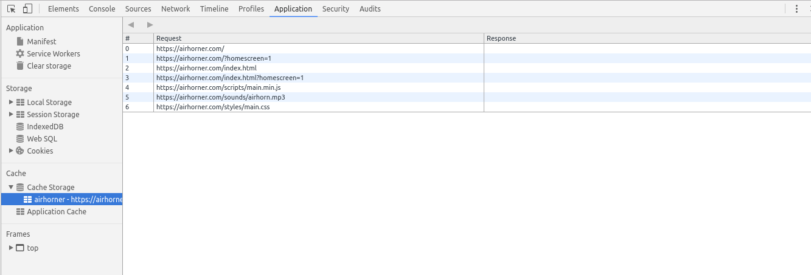

PW5 - Service Worker - AppShell
Nous allons maintenant mettre en place notre premier service worker afin de mettre en cache l'AppShell de notre application.
En JavaScript, ajoutez la classe
offà l'élément#wrappersi l'utiliseur est hors ligne.Dans la phase
install, mettez dans un cache nommé codelab-1, les fichiers de votre application nécessaires à l'AppShell ('/', le fichier javascript, la feuille de style, les polices et les images principales)Implémentez l'évènement
fetchpour retourner la version qui est en cache, et si elle n'existe pas, exécutez réellement la requête.Dans la phase
activate, veuillez supprimer les caches qui ne sont plus utilisés (dont le nom est différent de celui utilisé dans la version actuelle de votre service worker)Testez votre application. Après plusieurs rafraichissements, dans l'onglet
network, vos ressources statiques seront servies par le service worker, et non plus via le réseau.
Pour émuler le mode offline, vous mettre à profit les DevTools de Chrome.
- Cliquez sur l'onglet Network
- Activez / Désactivez l'option Offline
Pour débugger le cache de votre navigateur, vous pouvez vous servir notamment de la partie Cache de l'onglet Application.

Vous pouvez à présent vérifier le nouveau score calculé par LightHouse.